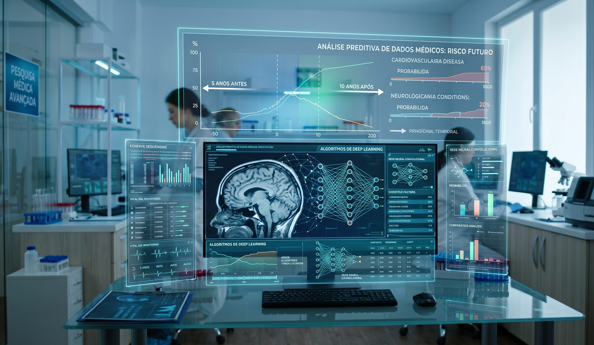
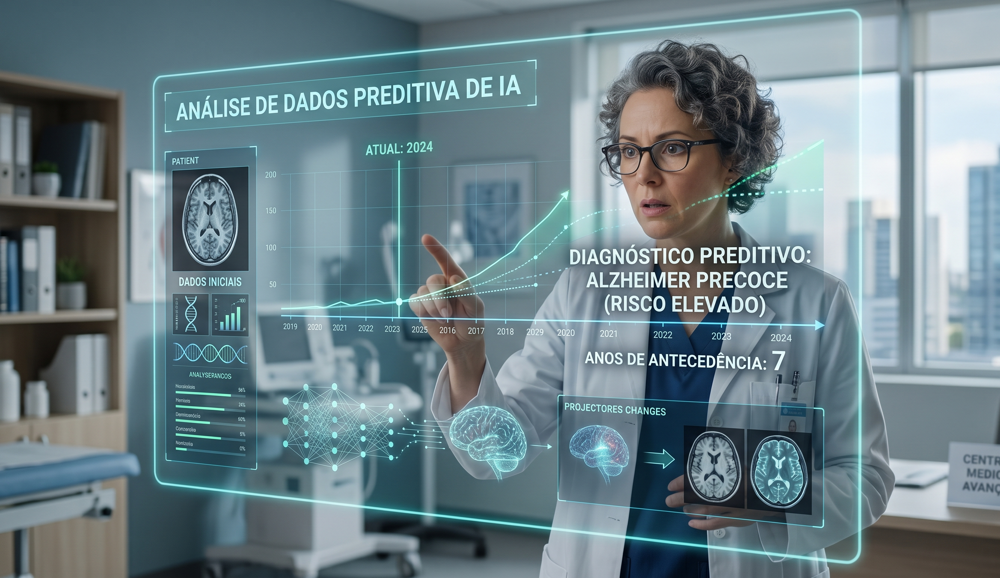

IA consegue prever diagnósticos médicos com anos de antecedência
Pesquisadores utilizam redes neurais para identificar padrões em exames de imagem, permitindo tratamentos preventivos contra doenças raras.

Análise preditiva de dados médicos através de algoritmos de deep learning.
A integração da inteligência artificial no setor da saúde está a transitar de uma ferramenta de auxílio para uma peça fundamental no diagnóstico precoce. Recentemente, um grupo de cientistas desenvolveu um sistema baseado em redes neurais profundas capaz de detetar sinais de patologias complexas, como o Alzheimer e problemas cardiovasculares, anos antes do aparecimento dos primeiros sintomas físicos.
Otimização de Padrões Silenciosos
O sistema funciona através do cruzamento de milhões de pontos de dados provenientes de exames de rotina. Ao contrário do olho humano, a IA consegue identificar variações microscópicas na estrutura de tecidos e vasos sanguíneos que indicam o início de um processo degenerativo. Esta capacidade de "ver o invisível" permite que os médicos iniciem protocolos de tratamento preventivo, aumentando significativamente a qualidade de vida e as taxas de sobrevivência.

O sistema identifica riscos de saúde antes da manifestação de sintomas clínicos.
Imagem gerada por https://gemini.google.com/app/
O Desafio da Ética e dos Dados
Apesar do sucesso técnico, a implementação em larga escala ainda enfrenta barreiras regulatórias. A proteção da privacidade dos dados dos pacientes e a transparência sobre como os algoritmos tomam decisões são os principais tópicos em debate. No entanto, os resultados clínicos são tão promissores que hospitais em todo o mundo já estão a iniciar programas-piloto para integrar estas ferramentas nos seus fluxos de trabalho diários.